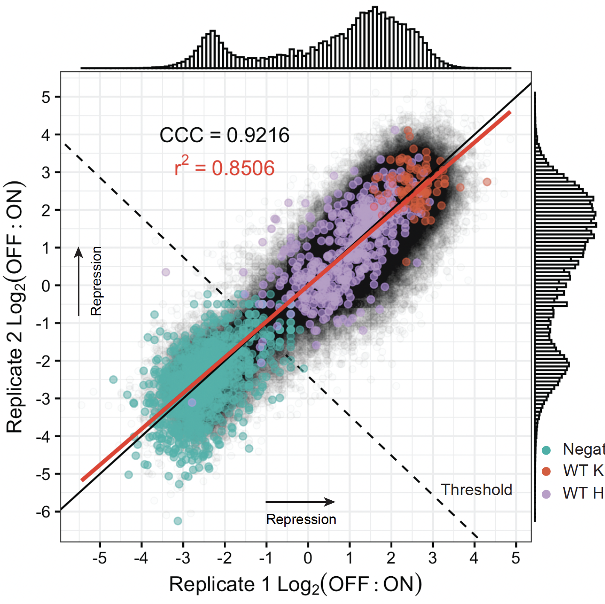

Prediction and design of transcriptional repressor domains with large-scale mutational scans and deep learning
We generated a high-throughput mutational scanning dataset measuring the repressor activity of 115,000 variant sequences in human cells. Then, we designed a deep learning model to accurately predict repressor activity.
Download PDF